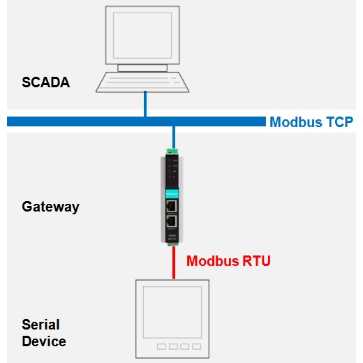
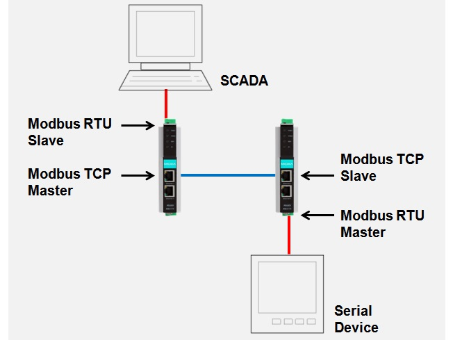
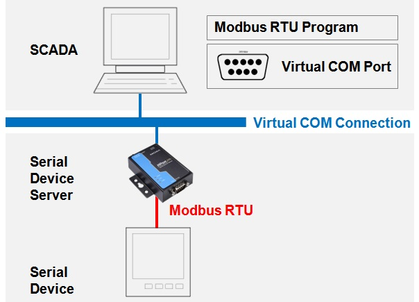
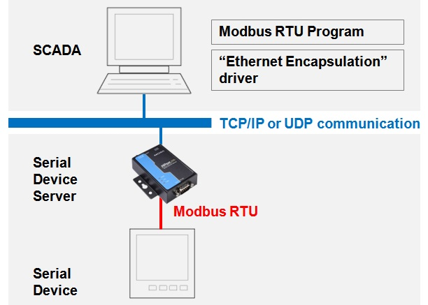
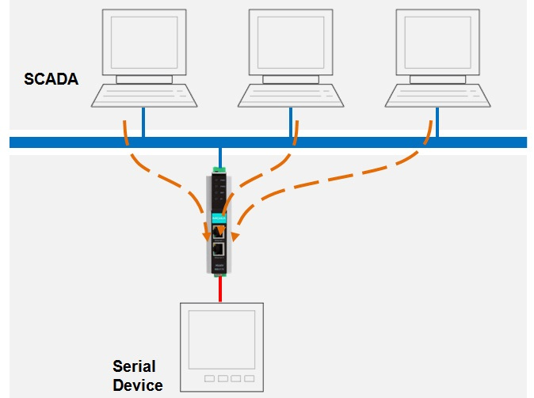
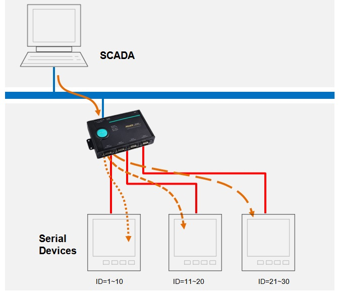
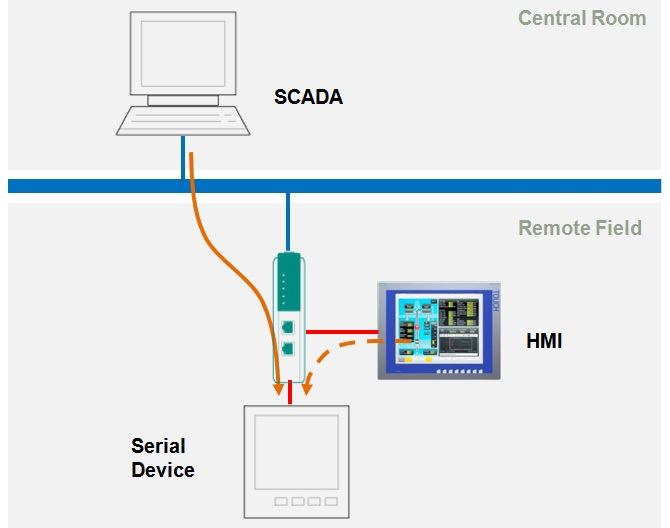

Mindig egy izgalmas kérdés a különféle protokollok átalakítása, így van ez a soros és Ethernet ModBUS kommunikáció esetében is.
A telemetria és automatizálás területén sokszor alkalmazzák a ModBUS RTU eszközöket.
Ennek az az oka, hogy - néhány fontos alapszabály betartásával - robosztus, megbízható rendszert lehet általuk kialakítani.
A SCADA rendszerek kapcsán gyakran kerül előtérbe az Ethernet, melynek egyik következménye a ModBUS TCP protokoll használatának szüksége.
Az RTU <-> TCP konverziónak számos módja van, melyek az alábbiakban kerülnek bemutatásra.
(Forrás: How to Architect Your Systems to Get the Most Out of Your Modbus Devices)
I. SCADA host + ModBUS TCP driver
Ilyen esetben gateway (protokoll átalakító átjáró) használata szükséges, melynek segítségével ModBUS TCP protokol szerint lehetséges kommunikálni a ModBUS RTU eszközökkel.
Amikor a gateway kap egy ModBUS TCP kérést, átalakítja az eredeti csomagot ModBUS RTU protokollnak megfelelő csomaggá, majd azt továbbítja a ModBUS RTU eszközök felé.

II. SCADA host + ModBUS RTU driver (beépített soros porttal)
Lényegében egy kettős konverziós megoldás olyan esetekre, amikor a meglevő, beépített soros porttal rendelkező SCADA hostot a hozzá kapcsolódó ModBUS RTU eszközökkel Ethernet hálózathoz szükséges csatlakoztatni.
Ilyenkor két gateway eszközt használunk, melyből az egyik elvégzi az RTU -> TCP konverziót, majd a másik ennek az ellenkezőjét, a TCP -> RTU átalakítást.

III. SCADA host + ModBUS RTU driver (beépített soros port nélkül)
Amennyiben a meglevő SCADA host nem rendelkezik saját beépített soros porttal, akkor lehetőségként marad az, hogy egy soros eszközkiszolgálóval virtuális soros portot kell létrehozni.
Ezzel a megoldással lehetővé válik a távoli soros eszközök elérése ezen az új eszközkiszolgálón keresztül, ugyanúgy, mintha a SCADA szerver rendelkezne saját natív soros porttal.

IV. SCADA host + beágyazott Ethernet driver
Amennyiben a meglevő SCADA host nem rendelkezik soros porttal, és a virtuális soros port létrehozása sem opció, olyankor jöhet szóba a beágyazott Ethernet driver használata.
Fontos kitétel, hogy a SCADA szoftvernek alkalmasnak kell lennie a beágyazott Ethernet driver támogatására.
Ennél a megoldásnál a host és a soros eszközök között a kapcsolat egy protokoll nélküli transzparens TCP/IP vagy UDP kommunikáción keresztül valósul meg, melyen a SCADA ModBUS RTU csomagokat küld a terepi eszközök felé.

V. ModBUS TCP - MultiMaster kapcsolat
Ethernet kapcsolaton keresztül a legtöbb gateway támogatja a MultiMaster hozzáférést (több, akár 32 SCADA host használata).
A soros eszközök esetében nehezebb a hálózati redundancia biztosítása (alapesetben nem támogatott a több Master alkalmazása), de átjárók használatakor jellemzően ez nem jelent gondot.

VI. Egy ModBUS TCP kapcsolat - több soros port
Ha több, különböző soros portokra felfűzött Slave eszközt kell lekérdezni, akkor nagyon jó alternatíva a többportos gateway használata.
Ilyenkor az átjárót úgy kell konfigurálni, hogy a ModBUS kérést a Slave ID alapján a megfelelő soros portra irányítva küldje el.

VII. Egyidejű hozzáférés - régi ModBUS RTU HMI, új ModBUS TCP SCADA
Amennyiben szükséges lenne megtartani a meglévő HMI kapcsolatokat, de az eszköz soros portja már csatlakozik egy átjáróhoz, ez esetben nincs elérhető szabad soros port a HMI kapcsolathoz.
Ilyen esetben erre alkalmas átjárókkal megoldható a soros port átirányítás. Ez nagy mértékben hasonlít egy router működésére, mivel a gateway át tudja adni a kérést a különböző soros portok felé a Slave ID alapján.

Gateway konfigurálás
A stabil működés szempontjából az egyik legfontosabb tényező a megfelelően beállított időzítés. Az eltérő gateway topológiák más-más konfigurációt igényelnek.
Például, a különböző soros portok eltérő TCP port jelölést kaphatnak, illetve azokhoz egyedi IP címek rendelhetők, vagy az egyes Slave csoportok routing táblába rendezhetők.
Lehetőség van továbbá a gateway kétirányú Slave eszközként történő konfigurálására, illetve ha rendelkezik belső memóriával, akkor akár az "agent" mód beállítására is.
Mivel minden ModBUS rendszer kialakítása valamilyen szinten eltér egymástól, ezért a fellépő rendellenességek, működési hibák is nagyban különböznek.
Minden konfigurációt és hibakeresési módszert lehetetlenség felsorolni, de az adott esetre vonatkozó konkrét kérdések már könnyebben megválaszolhatók.
Kérdések esetén…
Egy-egy ModBUS kommunikációs feladat kivitelezése, illetve probléma elhárítása sok esetben csak gyakorlati tapasztalattal lehetséges. A még megoldatlan kérdéseket az support@modbus.hu email címen, vagy alább a Kapcsolatfelvétel űrlapon lehet feltenni.
|